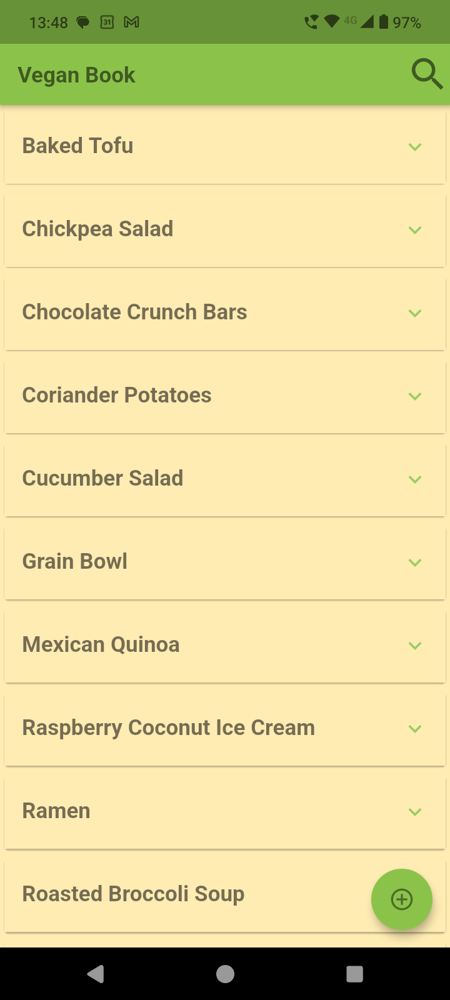
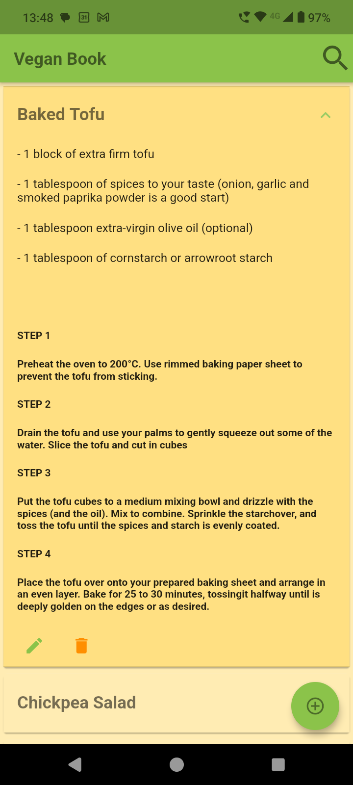
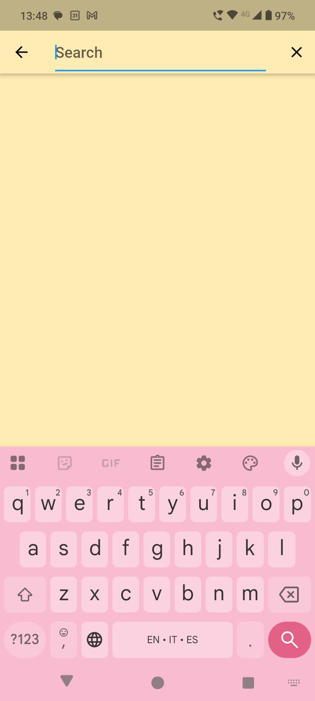
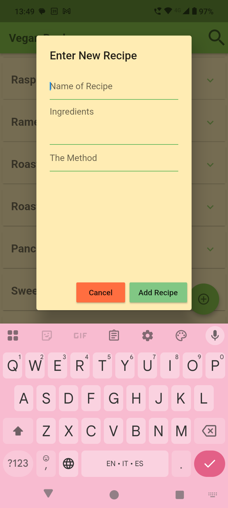
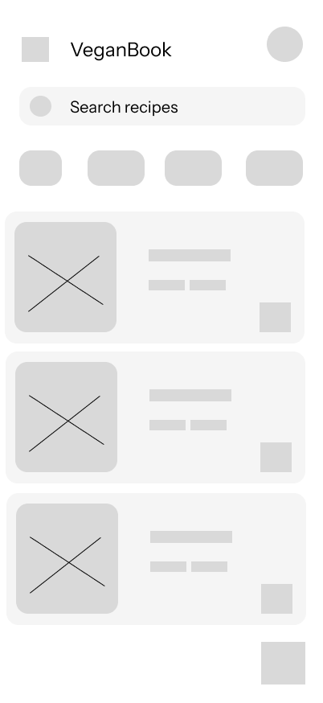
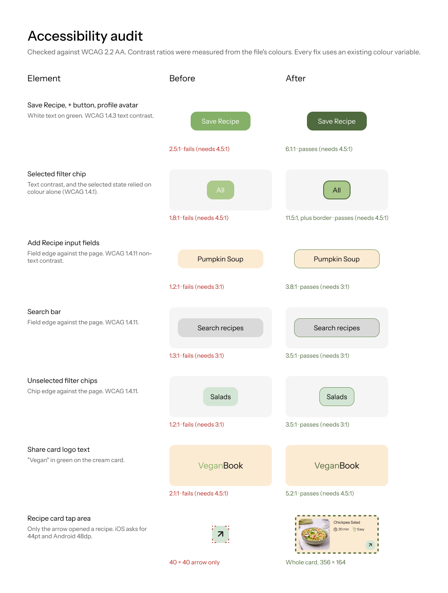
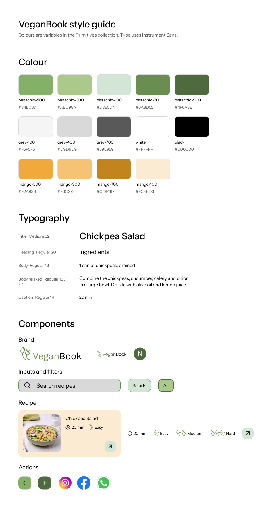

The Brief
What I was handed
Vegan Book is a recipe keeper for plant-based cooking. The client already had a working Android app and wanted it to look and feel better. The brief was a visual revamp, not a research project: no user interviews or testing were in scope, so every decision here comes from a close review of the existing app.




The app as I received it: Home, a recipe, Search and Add Recipe
What I noticed
- Nothing to choose from. Home was an alphabetical list of names with no photos, cooking times or categories. Tall rows meant only about ten recipes per screen.
- No recipe page. Recipes opened inside the list, pushing everything else down. Ingredients were in regular weight while every step of the method was bold, so nothing stood out.
- A blank search. Search opened onto an empty screen with no suggestions or categories, and its blue underline didn't match the green brand.
- Adding a recipe felt like a form. A pop-up with three free-text boxes: ingredients and method each went into one box, with no photo, time or servings. The Cancel button was a stronger colour than Add Recipe.
- No way to share. There was nothing to help people pass a recipe on.
The Redesign
Wireframes
I started by blocking out the structure. Home became a browsable feed with search and category filters at the top, and each recipe got its own page with the key facts (time, servings, difficulty) above the ingredients.

Wireframes for Home and the recipe page
Home: from a list of names to a menu
Each recipe became a card with a photo, cooking time and difficulty, so people can choose by what looks good and how much time they have. Search moved onto Home, and filter chips (Salads, Mains, Soups) replaced scrolling through the alphabet.
A proper recipe page
Recipes now open on their own screen with a large photo, then time, servings and difficulty in one row. Ingredients are a short bulleted list and the method is in regular weight, so headings do the work of guiding the eye. Share buttons sit at the bottom, where you finish reading.
Adding a recipe
The pop-up became a full screen. A photo is optional, with Camera and Gallery buttons and a friendly prompt ("Show off your dish"). Ingredients and instructions have their own fields, and prep time, servings and difficulty are added here so every recipe card has the same information. A single Save Recipe button replaces the competing Cancel and Add buttons.
New: the share card
Sharing food is a big part of plant-based cooking, so I designed a share card: the photo, the name, time, servings, difficulty and tags, a short description and the Vegan Book logo, ready to post to Instagram, Facebook or WhatsApp. It became the most distinctive part of the app.
Revisited in 2026
Why I came back to it
Looking at the redesign a few years later, the look still held up, but several colours didn't meet accessibility standards and the screens were drawn by hand rather than built from components. I went back to fix both.
Accessibility audit
I checked every screen against WCAG 2.2 AA and measured the contrast ratios from the file's colours. Six elements failed on contrast, and the recipe cards had a tap area smaller than the iOS and Android guidelines ask for. Every colour fix uses a colour that was already in the palette, so the look stayed the same and became easier to read.
- White text on green buttons: 2.5:1 to 6.1:1
- Selected filter chip: 1.8:1 to 11.5:1, plus a border so the selected state no longer relies on colour alone
- Add Recipe input fields: 1.2:1 to 3.8:1
- Search bar: 1.3:1 to 3.5:1
- Unselected filter chips: 1.2:1 to 3.5:1
- "Vegan" in the share card logo: 2.1:1 to 5.2:1
- Recipe cards: only a 40 × 40 arrow opened a recipe. Now the whole card does.

The audit page in Figma: each element before and after, with its ratio
Components and a style guide
I rebuilt the screens from components: a recipe card with name, time and difficulty properties, a filter chip with default and selected states, and a difficulty badge in three levels. Home is now made from instances, aligned on a consistent grid with 16px gaps. I also set up text styles (Title, Heading, Body, Caption) and documented the colours, type and components in a style guide, so the app could be handed to a developer and stay consistent.

Style guide: colour, typography and components
Outcome
If I took it further, the next step would be testing it with people who cook from recipe apps every week, since that wasn't part of the original brief. I'd also separate prep time from total time (a cheesecake that sets in the freezer for four hours isn't really a 55 minute recipe) and design the empty and error states.